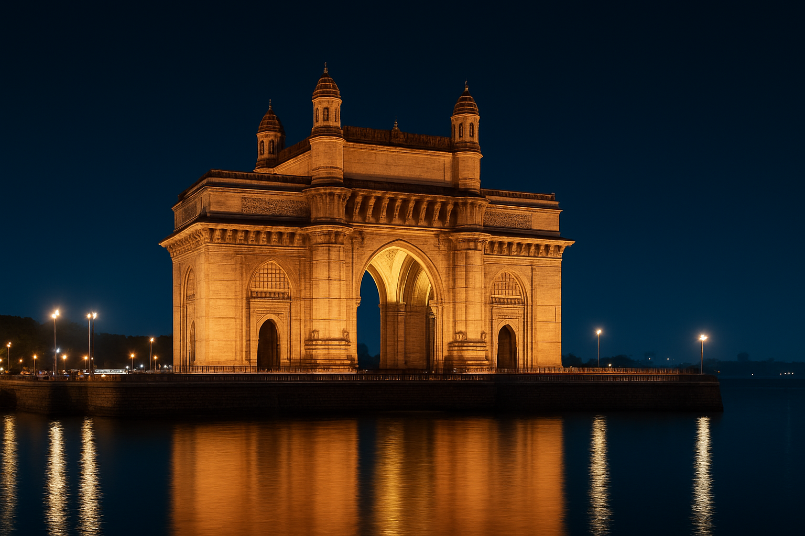
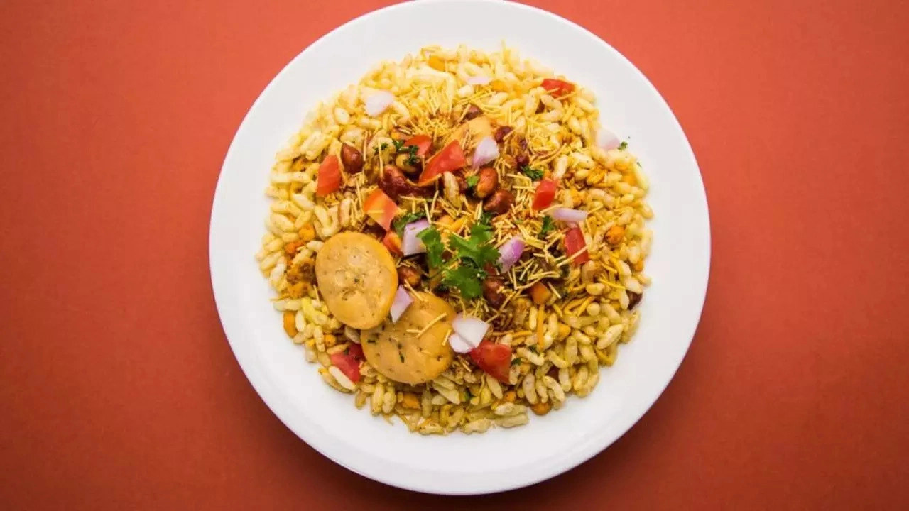

Historic railway station and UNESCO World Heritage Site.
📍 View on MapSpicy potato fritter in a bun, Mumbai’s street snack.
Shop: Anand Stall, Vile Parle
Mashed vegetable curry with buttery bread.
Shop: Sardar Pav Bhaji, Tardeo
Sweet, tangy and crunchy puffed rice snack.
Shop: Chowpatty Beach Stalls

Layered veg sandwich with chutney and spices.
Shop: Wodehouse Road Stalls, Colaba

Wraps filled with spicy chicken/veg filling.
Shop: Khan’s Frankie, Mohammed Ali Road
Sweet dumpling, famous during Ganesh Chaturthi.
Shop: Modak Stalls, Dadar